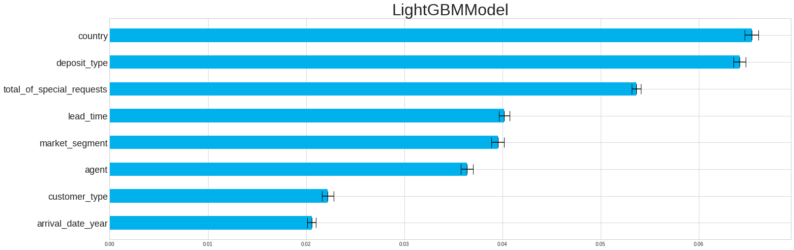
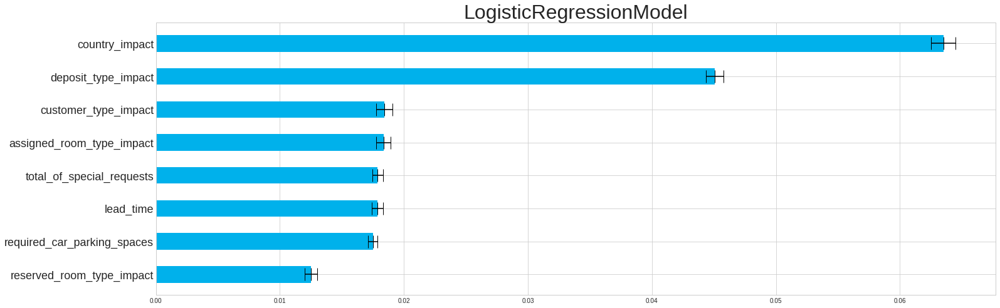
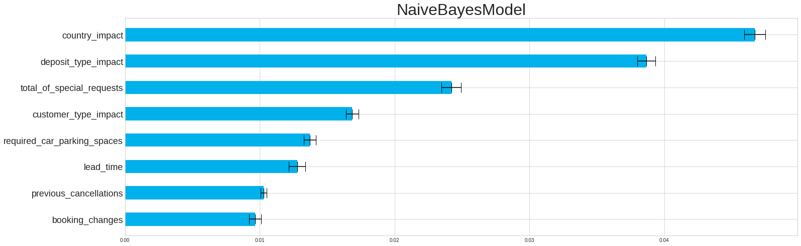
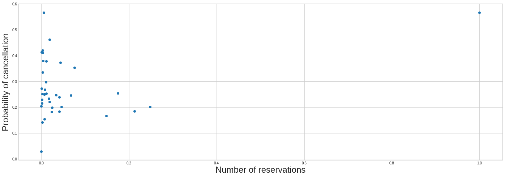
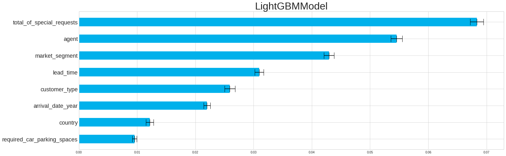
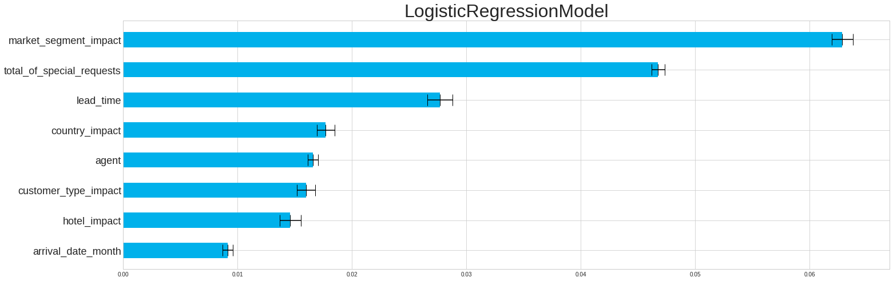
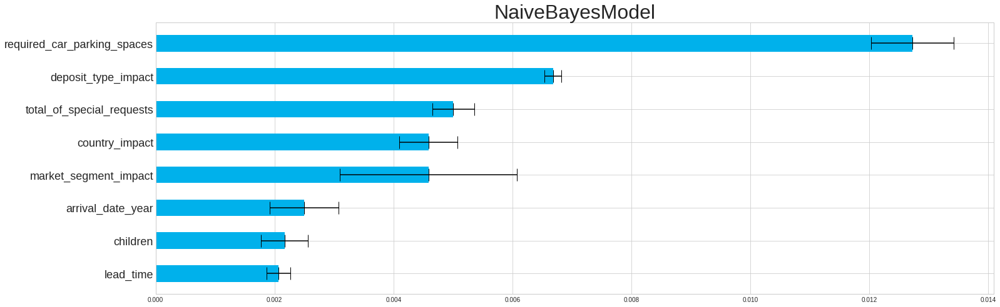

W pierwszym zadaniu sprawdzimy jak wygląda permutacyjna ważność cech dla trzech modeli LightGBM, regresji logistycznej oraz modelu bayesowskiego.

8 najistotniejszych cech modelu LightGBM

8 najistotniejszych cech regresji logistycznej

8 najistotniejszych cech modelu bayesowskiego
Na pierwszy rzut oka widać, że zmienna odpowiadająca za kraj pochodzenia rezerwacji jest najistotniejszą cechą, niezależnie od modelu. Pomijając pozostałe istotne zmienne w modelu, możemy się zastanowić, czamu akurat kraj ma tak duży wpływ na nasz model. Zobaczmy zatem jak wygląda zależność między sumaryczną liczbą zamówień w danym kraju, a prawdopodobieństwem anulowania rezerwacji.

Zależność sumarycznej liczby rezerwacji od prawdopodobieństwa anulowania rezerwacji
W gąszczu punktów trudno jest nam zauważyć jakiś szczególny trend w danych, jednak możemy zaobserwować jeden, bardzo oddalony punkt, jeżeli chodzi o liczbę zamówień. Jego prawdopodobieństwo także jest wysoce odstające, z uwagi na blisko 60% anulowanych zamówień, gdzie średnia wynosi około 38%. Taki odstający przypadek może silnie zaburzać predykcje naszego modelu dlatego też usuniemy wszystkie przypadki pochodzące z tego kraju i sprawdzimy ponownie ważność cech naszych modeli.

8 najistotniejszych cech modelu LightGBM

8 najistotniejszych cech regresji logistycznej

8 najistotniejszych cech modelu bayesowskiego
Po wyrzuceniu niewygodnych przypadków, obserwujemy zwiększoną różnorodność naszych modeli, a pozostałe istotne cechy mają więcej sensu w interpretacji niż to było w przypadku zmiennej `country`.